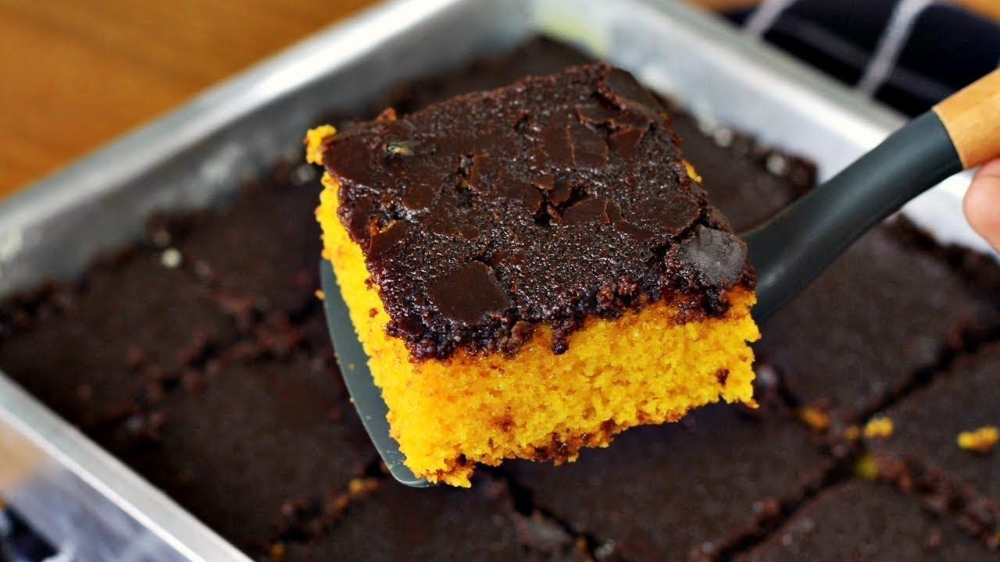

Bolo de cenoura com cobertura de chocolate

Descrição
Ingredientes e passo a passo para fazer um excelente bolo de cenoura com cobertura de chocolate craquelada.
Ingredientes do bolo de cenoura
- 1/2 xicara (cha) de oleo
- 4 ovos
- 2 e 1/2 xicaras (cha) de farinha de trigo
- 3 cenouras medias raladas
- 2 xicaras (cha) de acucar
- 1 colher (sopa) de fermento em po
Modo de preparo
- Em um liquidificador, adicione a cenoura, os ovos e o oleo, depois misture
- Acrescente o acucar e bata novamente por 5 minutos
- Em uma tigela ou na batedeira, adicione a farinha de trigo e depois misture novamente
- Acrescente o fermento e misture lentamente com uma colher
- Asse em um forno prequecido a 180 graus por aproximadamente 40 minutos
Ingredientes da cobertura de chocolate
- 1 xicara de chocolate em po (ou achocolatado)
- 1 xicara de acucar
- 1 a 2 colheres (sopa) de manteiga (ou margarina)
- 5 colheres (sopa) de leite
Modo de preparo
- Leve tudo ao fogo e esquente ate ficar bem lustroso e desmanchar o acucar
- Coloque ainda quente sobre o bolo
Pronto! Agora voce pode saborear o seu bolo de cenoura com cobertura de chocolate, aproveite!